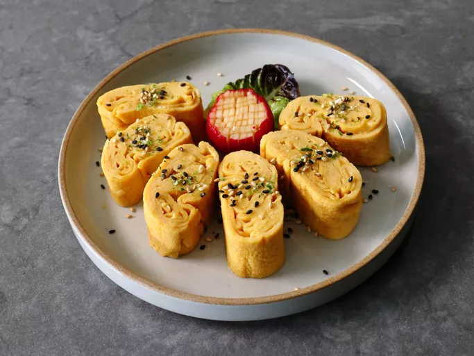

Tamagoyaki

Description
Just when you think you’ve posted a recipe for every possible type of omelet ever invented, someone sends you a suggestion for Tamagoyaki. And, if there’s any omelet that deserves a video demonstration, it’s this amazingly beautiful, and incredibly delicious Japanese-style rolled omelet, especially one showing you how to do it without the right pan, or any experience.
If you do any amount of online research regarding tamagoyaki, you’ll see that a specially shaped pan is the real secret behind getting a perfect shape. The high-sides, and square corners make it a lot easier to roll, and if you have one of those, and decades of experience, this omelet is really not that hard. However, if you don’t, this method will get you very similar results, which is why I really do hope you give it a try soon. Enjoy!
Prep Time: 10 minutes
Cook Time: 10 minutes
RestTime: 5 hours
Total Time: 25 minutes
Servings: 2
Ingredients
- 4 large eggs
- 4 teaspoons water
- 1 teaspoon soy sauce
- 1 teaspoon mirin
- 1/4 teaspoon kosher salt
- 1/4 teaspoon white sugar
- 1 pinch cayenne pepper (optional)
- 1/2 teaspoon sesame oil
- 1 1/2 teaspoons vegetable oil
- 1 teaspoon furikake (optional)
Instructions
- Add eggs to a bowl, along with water, soy sauce, mirin, salt, sugar, and cayenne. Use a fork to beat eggs until whites are completely incorporated. Transfer egg mixture into a pourable measuring cup.
- Set a 10-inch non-stick pan over medium heat. Mix sesame and vegetable oil in a small bowl, and use a brush to oil the pan.
- Pour in 1/3 of egg mixture. Tilt the pan to cover the bottom with eggs. Cook until omelet is about halfway set, then use a spatula to turn over about 1 inch of edge toward the center on 3 sides to square the shape on those 3 sides. If eggs seem to be cooking too fast, reduce heat to medium-low. Use a spatula to roll the omelet toward the rounder side, to form a rectangular roll, about 2 inches wide by 8 inches long.
- Slide omelet over to about 3 inches from the edge of the pan, and brush more oil over the pan surface. Pour the second 1/3 of eggs around the omelet. Lift omelet slightly with the spatula so that some eggs flow underneath. Raise heat back to medium, if it was reduced. When egg layer is halfway set, use a spatula to roll this layer up and over the already-folded omelet in the pan, and continue to roll into a rectangle.
- Add remaining 1/3 of egg mixture, and repeat cooking and rolling steps to make the final layer.
- Transfer omelet onto plastic wrap, and use it to shape the omelet, before wrapping and rolling it into a tight package; cover with a towel and let rest for 5 minutes.
- Unwrap, slice into 6 or 8 pieces, and serve on a warm plate. Sprinkle with furikake.